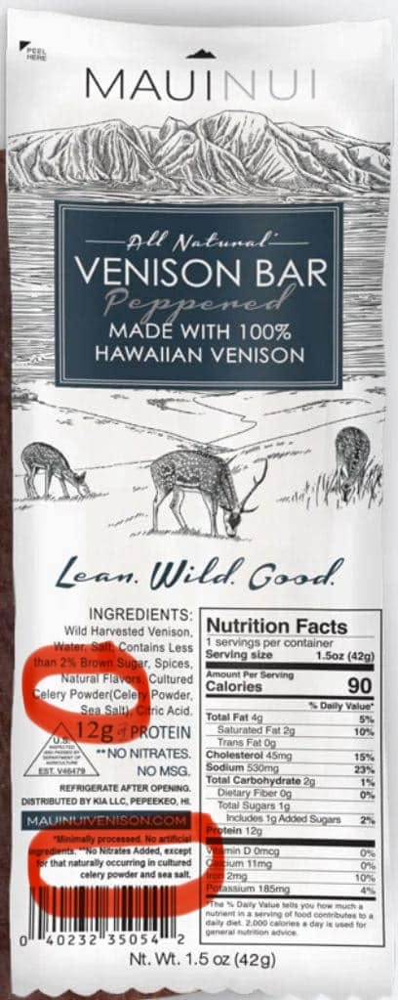

(no text — see the shared post below)
Beware of “natural” processed meats, which are often deceptively labeled as “uncured” or “nitrate-free”.
For example, jerky, bacon, sausage, deli meats, hot dogs, etc.
These “natural” processed meats likely raise the risk for cancer (especially colon cancer), heart disease, diabetes, and dementia.
- Curing is a form of processing that alters the chemical structure of meat to improve taste and shelf life. Cured meat is classified by the WHO as a group 1 carcinogen, in the same category as smoking, asbestos, and ionizing radiation. That’s because it contains high levels of carcinogenic nitrosamines which are linked with multiple cancers, especially colon cancer. These nitrosamines are also atherogenic and diabetagenic, and probably toxic in multiple other ways as well.
 The Nutrition Source - Harvard Chan SchoolWHO report says eating processed meat is carcinogenic: Understanding the findings • The Nutrition SourceLast week the World Health Organization (WHO)’s International Agency for Research on Cancer (IARC) announced that consumption of processed meat isnutritionsource.hsph.harvard.edu
The Nutrition Source - Harvard Chan SchoolWHO report says eating processed meat is carcinogenic: Understanding the findings • The Nutrition SourceLast week the World Health Organization (WHO)’s International Agency for Research on Cancer (IARC) announced that consumption of processed meat isnutritionsource.hsph.harvard.edu
 UT MD AndersonProcessed meat and cancer: What you need to knowProcessed meats are any meat that has been preserved by smoking, salting, curing or adding chemical preservatives. They include deli meats, bacon and hot dogs. Eating processed meats has been linked to increased colorectal cancer risk.mdanderson.org
UT MD AndersonProcessed meat and cancer: What you need to knowProcessed meats are any meat that has been preserved by smoking, salting, curing or adding chemical preservatives. They include deli meats, bacon and hot dogs. Eating processed meats has been linked to increased colorectal cancer risk.mdanderson.org
 en.wikipedia.orgNitrosamine - Wikipediaen.wikipedia.org
en.wikipedia.orgNitrosamine - Wikipediaen.wikipedia.org
- The USDA puts strict limits on how much sodium nitrite can be used to cure meat. This is to limit the amount of carcinogenic nitrosamines that are formed.
ecfr.gov21 CFR 172.175 -- Sodium nitrite.ecfr.gov
- Companies bypass this regulation from the USDA by using natural nitrates to cure the meat (usually celery juice, celery powder, or sea salt). This allows them to use much higher levels of nitrates than the USDA allows to make the cured meat taste better. And it allows them to market the product as “natural” or “uncured”. The result is that the natural products may contain far higher levels of toxic nitrosamines than in the regular processed meat you buy in grocery stores which is cured with sodium nitrite.
It’s not the nitrates that are bad for you. Nitrates are healthy. Celery juice and celery powder are good for you.
It’s the chemical reaction that occurs when the protein in meat is cured with nitrates and heated afterward that is the problem— this chemical process is what forms the carcinogenic nitrosamines. It’s the nitrosamines that are toxic, not the nitrates.
.
mcleanmeats.comCelery extracts added deli meatmcleanmeats.com
- The hazard ratios on cured meat are worse than any other food category in large prospective cohort studies, except trans fats which have now been banned from the food supply.
facebook.com/share/v/18NzYS1pLQ
It’s important to understand the harm.
 Harvard T.H. Chan School of Public HealthUltra-processed foods—some more than others—linked to early death | Harvard T.H. Chan School of Public HealthHigh intake of ultra-processed foods—particularly processed meats, sugary breakfast foods, and sugar- or artificially sweetened beverages—may increase risk of early death, according to a Harvard Chan School study.hsph.harvard.edu
archive.isArchived web pagearchive.is
Harvard T.H. Chan School of Public HealthUltra-processed foods—some more than others—linked to early death | Harvard T.H. Chan School of Public HealthHigh intake of ultra-processed foods—particularly processed meats, sugary breakfast foods, and sugar- or artificially sweetened beverages—may increase risk of early death, according to a Harvard Chan School study.hsph.harvard.edu
archive.isArchived web pagearchive.is
——————-
Here is the breakdown of how and where these toxic nitrosamine compounds appear:
- Preformed: Nitrosamines already in the meat
Cured meats (like bacon, ham, and hot dogs) are treated with nitrites or nitrates to cure the meat, including natural sources like celery powder or sea salt. Nitrosamines directly form during the curing and storage process, and significant additional formation happens during high-heat cooking.
The Heat Trigger: When you fry bacon or grill sausages at temperatures above 150°C (302°F), the nitrites react with the amino acids (amines) in the meat to create nitrosamines like N-nitrosopyrrolidine.
The Industry "Fix": To combat this, manufacturers are now required to add antioxidants like Vitamin C (ascorbate) or Vitamin E (tocopherol) to the curing mix. The most commonly used is sodium erythorbate, which is a stereoisomer of vitamin C. These antioxidants block the chemical reaction that creates nitrosamines, making modern cured meats lower in these compounds than they were in the 1970s. The “natural” products which use celery powder and sea salt are not subject to these requirements. (A few manufacturers of these natural products voluntarily add cherry powder to take the place of the antioxidant sodium erythorbate used in conventional products, but this is not standardized and it is unclear if it works as well.)
The USDA puts strict limits on how much nitrites and nitrates can be used to cure meat, in order to limit production of toxic nitrosamines. The "Natural" or "Nitrate-Free" meats using celery powder or sea salt can contain higher levels of nitrites and nitrates than conventionally cured meats because the USDA puts no limit on the levels from natural plant extracts. As a result, these natural products may contain far more toxic nitrosamines than their conventional counterparts.
- Endogenous: Nitrosamines formed in your body
Even if you eat uncooked cured meat that happens to be low in nitrosamines, your body can still produce its own nitrosamines through a process called endogenous nitrosation.
The Acid Trigger: The highly acidic environment of your stomach acts as a catalyst. When you swallow residual nitrites in meat, they can react in your stomach with the protein in the meat to form nitrosamines. Some formation also continues to occur in the intestines after food leaves the stomach.
Heme Iron Factor: Recent research suggests that the heme iron found in red meat can further catalyze this reaction in the gut, which may be one reason why processed red meats are more closely linked to certain cancers than processed white meats or vegetables (even though vegetables often contain more nitrates). Vegetables are naturally packed with vitamin C and polyphenols that block the reaction, and they lack the concentrated amines and heme iron found in muscle meat.
#processedmeatHD #peterattiaHD
